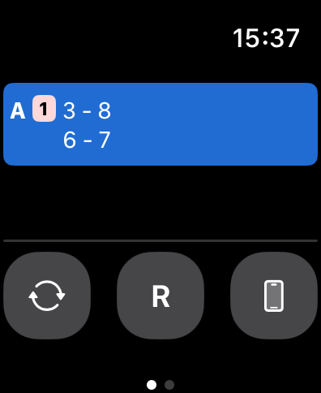
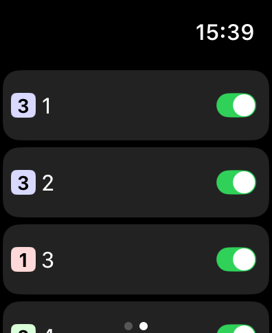

PairGen は Apple Watch に対応しています。コートから離れた場所でも組み合わせの確認や操作が行えます。
iPhone の Watch アプリを開き、「利用可能な App」から PairGen を探してインストールしてください。
iPhone と Apple Watch の両方で PairGen を起動してください。iPhone がバックグラウンドにある場合でも連携は維持されます。

Apple Watch アプリは Game と Players の2つのタブで構成されています。画面を左右にスワイプしてタブを切り替えてください。

Watch の Game タブでは、現在の組み合わせをコートごとに確認できます。各行の左側にコート名とレベルバッジ（アプリ本体と同じ配色）が表示されます。
Watch の Players タブでは、プレイヤーの出場状態（出場中 / 休憩中）やレベルを Watch から直接操作できます。コートの近くにいなくても休憩メンバーの管理が行えます。